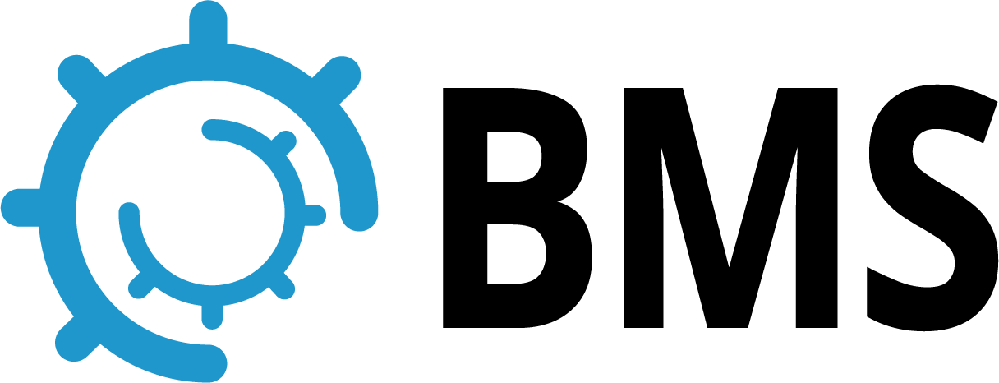

📊 Rapor Hazırlama Portalı

BMS Datası Hazırla
Kalite raporu için BMS verilerini düzenleyin
Alotech Datası Hazırla
Alotech düzenleme aracı ile detaylı işlemler
← Geri / Ana Sayfa
Bu işleme devam etmek istediğinize emin misiniz?
Vazgeç
Devam Et